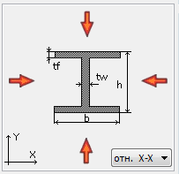
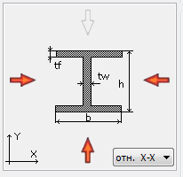
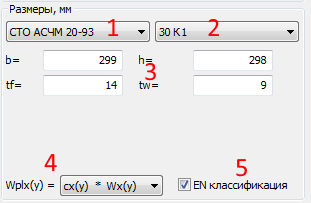
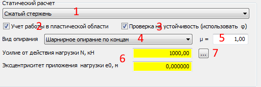
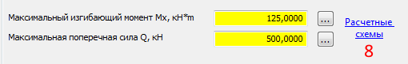
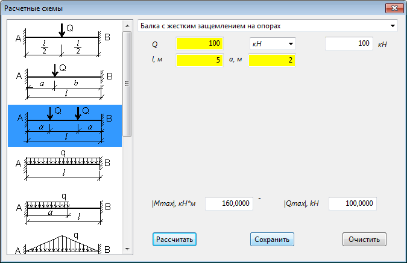
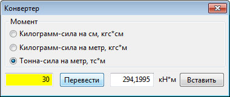
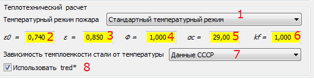

1
Для выбора обогреваемой стороны - двойной клик по стрелке.
 
2
В зависисмости от выбранного режима, поля доступные для редактирования выделяются желтым цветом.
3
2 Список номеров сортамента.
3 Размеры сечения.

4 Переключатель для выбора алгоритма расчета пластических моментов сопротивления сечения.
5 Классификация сечения по п. 4.2.2 EN 1993-1-2
4
Поля для ввода или отображения значений длины, количества и массы конструкции
2 Коэффициент надежности стали (значения например по таблице 3 СП 16.13330.2011).
3 Поле для ввода или отображения значения прочности стали по пределу текучести.
4 Поле для ввода и отображения плотности стали
5 Список зависимостей изменений свойств стали от температуры.


1 Список выбора вида нагружения конструкции.
2 Независимый переключатель для выбора условий расчета при наличии изгиба. Если выбран, расчет проводится с использованием пластический моментов сечений Wpl.
3 Независимый переключатель для выбора расчета на прочность или расчета на устойчивость.
4 Список выбора видов опирания.
5. Поле для отображения и ввода значения коэффциента для определения расчетной длины.
6 Значения усилий от действия нагрузки.
7 Кнопка для запуска конвертера единиц измерения силы и момента.
При выборе вида нагружения "Изгибаемый стержень в одной из главных плоскостей" в простых случаях усилия от действия нагрузки можно рассчитать по расчетным схемам (8).




1 Список для выбора температурного режима пожара.
2 Поле для ввода значения степени черноты стали.
3 Поле для ввода степени черноты пламени.
4 Поле для ввода значения углового коэффициента облученности.
5 Поля для ввода значения коэффициента теплопередачи конвекцией.
6 Поле для ввода значения поправочного коэффициента для учета влияния теневого эффекта.
7 Список выбора аналитической зависимости теплоемкости стали от температуры.
8 Независимый переключатель, если выбран используется значение
приведенной толщины определенное по номинальный размерам (с учетом радиусов и уклоном полки).